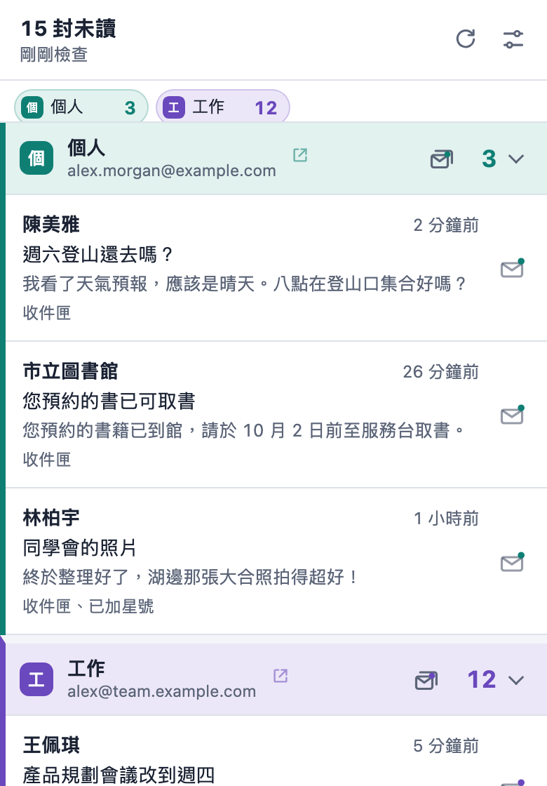

新信件，一眼看到。
工具列顯示未讀數，並為你在 Chrome 已登入的每個 Gmail 帳號跳出桌面通知。不需另外登入、不需 OAuth、沒有伺服器。
免費、開放原始碼，支援 8 種語言。

 4
4哪些信重要，由你決定
每個收件匣、分頁、已加星號、重要或任何標籤，都能設成三種層級之一。在這裡試試看：圖示和通知會跟著你的選擇改變，就像設定頁的即時預覽。
收件匣收件匣裡的未讀信
3已加星號加了星號且未讀的信
1家人你的標籤
2- 關不檢查
- 計數算進工具列圖示上的未讀數
- 通知計數，並跳出桌面通知
你會看到的
 4
4多個信箱，一眼分清
你在 Chrome 登入的每個 Gmail 帳號都會自動偵測，在清單中各自一區。
每個信箱有自己的名稱、顏色與音效
看一眼就分得出是哪個信箱，聽通知音效也分得出來。
顯示加總，或各信箱分開
圖示可以顯示 15，也可以顯示 3/12，各信箱分開看。
標籤用選的就好
標籤直接從 Gmail 讀取，不必手動輸入名稱。
不開 Gmail 也能處理
不管你在 Chrome 的哪個分頁，都能直接處理新信。
在通知上標為已讀
在通知上按一下，Gmail 裡的這封信也會變成已讀。
一鍵清空整個信箱
確認一次，就把信箱裡所有未讀信標為已讀。
打開正確的那封信
點信件會在對應的 Gmail 帳號開啟，並沿用已開啟的 Gmail 分頁。
重視隱私
Pigeon Post 直接使用你在 Chrome 已登入的 Gmail，不必註冊帳號，也不必另外登入。
只與 mail.google.com 連線
沒有伺服器、沒有分析、沒有廣告、沒有追蹤。任何資料都不會傳給開發者。
郵件只存在記憶體
未讀信的寄件者、主旨和摘要只放在記憶體中，關閉 Chrome 就清除。
只讀取需要的資料
只讀取 Gmail 的未讀信摘要，不讀完整內文；除了你要求的標為已讀，不做任何更動。
開放原始碼
所有程式碼都以 GPL-3.0 授權公開在 GitHub，做了什麼都能自己檢查。
一分鐘開始使用
加到 Chrome
從 Chrome 線上應用程式商店安裝 Pigeon Post。
保持登入 Gmail
你在 Chrome 登入的每個 Gmail 帳號都會自動找到。
選擇重要的信
設定頁會立刻開啟，選好哪些要計數、哪些要通知。